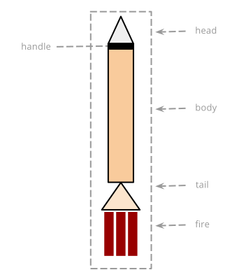
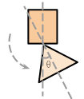
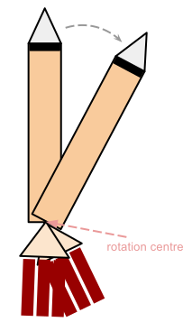
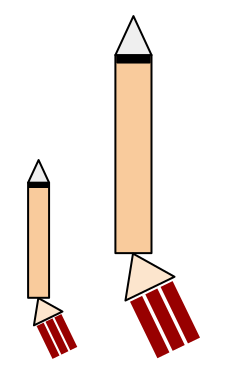
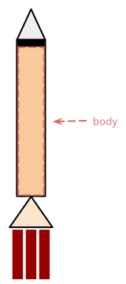
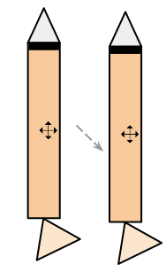
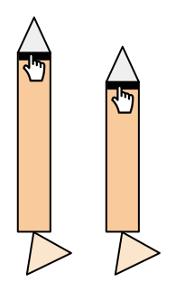
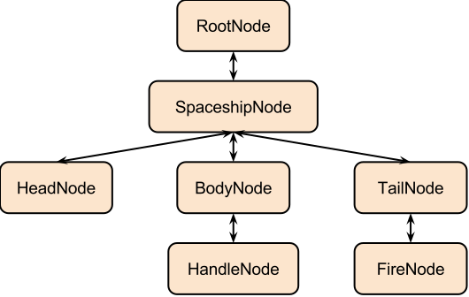

The goals of this assignment are to give you an opportunity to:
In this assignment, you will create an interactive spaceship, SPECIA. Users will be able to
You will render the spaceship using an overhead view:
You are not allowed to use any third-party JavaScript or CSS files in this assignment with the following exceptions:
You will use an HTML5 canvas with a fixed size of 800 x 600 pixels. Since the canvas is not infinite, objects might move off the canvas. In these cases, they should reappear on the opposite side of the canvas.
SPECIA consists of a head, a body, and a tail. The head is a triangle attached to the top of the body. The body is a rectangle. On its top, there is a black rectangular resizing handle. Users could resize the length of the body with the handle. The tail is attached to the bottom of the body. When the spaceship is driven forward, it expels mass backwards to form a string of fire at the end.
When no action is performed by the user, the spaceship stays static without expelling any fire.
The user could drive the spaceship forward by holding the up arrow key on the keyboard. You may assume the spaceship has a uniform speed while driving. It should not move very fast: the user should not feel out of control when driving it. There should be fire at the end of the spaceship in the same direction with the tail whenever the spaceship is moving forward.
In any case, moving forward means moving in the direction that the head is pointing to.
The user could rotate the tail of the spaceship clockwise or counterclockwise by pressing the left or the right arrow key on the keyboard. This would make the space ship turn left or right if it is being driven forward.
Here, we only explain how the spaceship behaves when turning right. Turning left is completely symmetric.
When the user presses the right arrow key on the keyboard, the tail of the spaceship rotates counterclockwise smoothly about the top of the triangle.
The tail then forms an angle, θ, with the ship body.
The tail should stay that way relative to the body once the user releases the key. Only when the user presses the opposite arrow key on the keyboard will move it back.
In addition, the user cannot rotate it more than 45 degrees in one direction. When it reaches 45 degrees, pressing the right arrow key should no longer have any effect.
As we mentioned above, when the user drives the spaceship, it should move forward in a constant speed. If θ is not zero, the spaceship should simultaneously rotate about the top of the tail as a whole. The speed that the spaceship rotates should be reasonably proportional to θ.
Pressing the left and right arrow keys at the same time will result in nothing.
The spaceship could be powered up for 5 seconds by pressing the space key on the keyboard. It will not be triggered until the space key is released.
When a power-up is triggered, everything should be twice the size now in whatever the shape it is in. When resizing, the position of the rotation reference remains unchanged.
If it is being driven forward, the speed should also be doubled.
The speed of rotation should not change, if it is rotating.
After 5 seconds, the spaceship should be returned to the normal state.
The user could also interact with the spaceship using a mouse when it is static. When the mouse pointer is on the spaceship body (the rectangle bounded by the red dashed lines in the following image), the pointer should become a move cursor.
Pressing the left mouse button and move the mouse pointer should smoothly drag the spaceship to a new position. The relative position between the spaceship and the mouse pointer should stay unchanged during the dragging. The shape of the spaceship should also not change .
The user could resize the length of the spaceship body by dragging the black resizing handle. The mouse pointer should become a pointing hand when it is upon the handle. Pressing and moving the pointer towards the tail will make it smaller, and vice versa.
The user cannot resize it while it is moving or is in a power-up.
You may add many other interactions, as long as the aforementioned requirements are not violated.
As mentioned above, you will represent the spaceship using an overhead view. You will use a scene graph to represent the different parts of the spaceship.
A scene graph is very similar to an interactor tree: You have a root node, child nodes, and so on. Each node's location on the screen is described relative to its parent node (with the exception of the root node).
In this assignment, you will have a root node representing the scene and background, a child representing the spaceship. The spaceship has three children representing its head, body, and tail. The body has a handle as its only child. The tail has fire as its only child.
Each node in the scene graph maintains an affine transform that describes its location, orientation, and size, relative to its parent. This transform will be applied prior to the object painting itself, allowing the object to paint itself in it own, local coordinate system. Note that you will need to ensure that this transform is properly applied to the context prior to rendering commencing. Using this architecture, nodes will paint themselves under the following assumptions:
As mentioned above, each node will maintain an affine transform relative to its parent, which will be concatenated with the current transform (and applied to the context), before the node paints.
These transforms merely set up the canvas for the individual parts to paint themselves. However, the individual parts may be further transformed by user interaction.
While affine transforms may, at first, seem difficult, once you master them, this assignment will be rather straightforward.
The key to using affine transforms in this assignment is to know that you (generally) concatenate the affine transform of each node to the current transform, as you descend the scene graph. Thus, you're typically saving the current context, grabbing a node's affine transform, concatenating it to the current transform, rendering, and then recursively doing the same for each child. When you're done with each node, you'll restore the saved context.
We write "generally" and "typically" because if you leave a scaling transform intact, it will scale every child node thereafter, so you will generally not keep a scaling transform in place.
One of the most important things to keep in mind is that the affine transforms and their inverses enable you to move between local and global (screen) coordinates. For example, given a transform to render the spaceship to the screen, its inverse can be used to turn mouse events back into the model's original coordinate system (as long as the original transform doesn't do something like scale by 0).
To assist with using affine transforms, we are providing an affine transform module from Google's Closure library. This module makes it relatively easy to create affine transforms and concatenate matrices. Note, however, that you will also need to interface with the 2D context object of the HTML 5 canvas, so you will be working with affine transforms in two contexts: when rendering using the context object, and Google's affine transforms when interpreting input. Again, this is rather straightforward once you are comfortable with affine transforms.
The assignment requires you to support resizing the spaceship. There are several ways to implement this. The one you choose will depend on how you decide to render the spaceship itself.
One way is to scale the context prior to painting the spaceship. The drawback to this approach, as noted above, is that you can't keep that scaling transformation in place as you descend the scene graph and paint children, because they, too, will then be scaled.
Another way to render the spaceship is to paint it using standard drawing operations. For example, you could calculate the scaled dimensions of the spaceship, and fill a rectangle of that size, without applying a scaling transform. In this approach, you will also need to update the bounding box.
Hit detection is the process of determining whether the user's cursor is within a specific object in the scene. The complication, of course, is that the canvas's context will undergo several transforms as it descends the scene graph to paint children.
Accordingly, as covered in class, what you'll need to do for every node is perform an inverse transformation of the screen coordinate to the object's local coordinate system, to see whether it falls within the object. You could cache the result as a global transformation matrix in each node and recursively update a node and its descendants each time a node is changed.
While there are many other ways you could perform hit detection, this is the method you must implement for this assignment.
You must complete the assignment within the following constraints:
'use strict';.
To receive a great mark, you must implement the system as described above, under the given constraints, while having an aesthetically pleasing design and a great user experience.
Note this assignment provides less guidance on the ultimate interface and interaction design: You may find that you need to spend more time on these aspects than in previous assignments.
TAs will mark your assignment using the latest version of Chrome on whatever platform they use on a daily basis. In theory, the specific platform shouldn't matter. If we find platform differences, we'll handle them as they arise. They will mark the assignment in "offline" mode (i.e., with no access to the Internet).
In this assignment, fewer marks will be assigned to aesthetics. You should focus on tweaking the scene graph to work well with user interactions using affine transforms.
You will use subversion to both check out and submit your assignment. Details can be found on the course website.